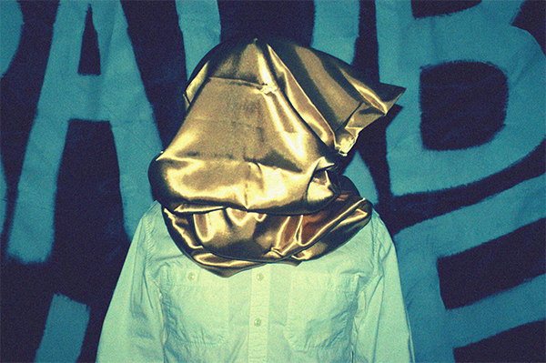

Bio
Genuine Leather was formed in 2011 by Chris Galis. The project started out by releasing a song a week during the Spring of 2011, resulting in what is now called the Genuine Leather LP. They made their live debut at Hotel Vegas as part of Reverberation Appreciation Society's pre-Levitation festival lineup. In 2014 they released their second LP Losers to lots of critical acclaim from Austin's radio and written press. They went on to share stages with other bands like Sweet Spirit, Unknown Mortal Orchestra, Residual Kid, Marmalakes, Pure X, and more. The band is currently in the studio working on their third LP, titled Brunch.